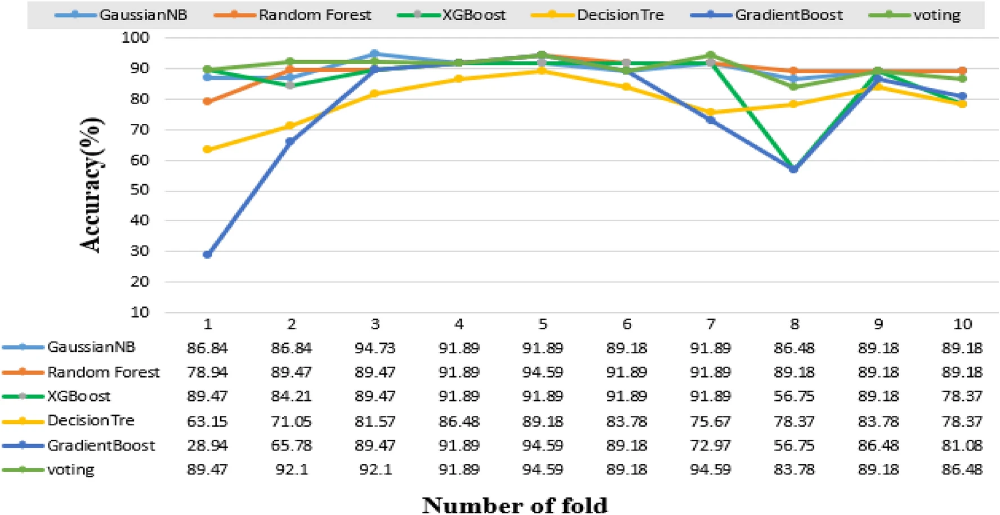
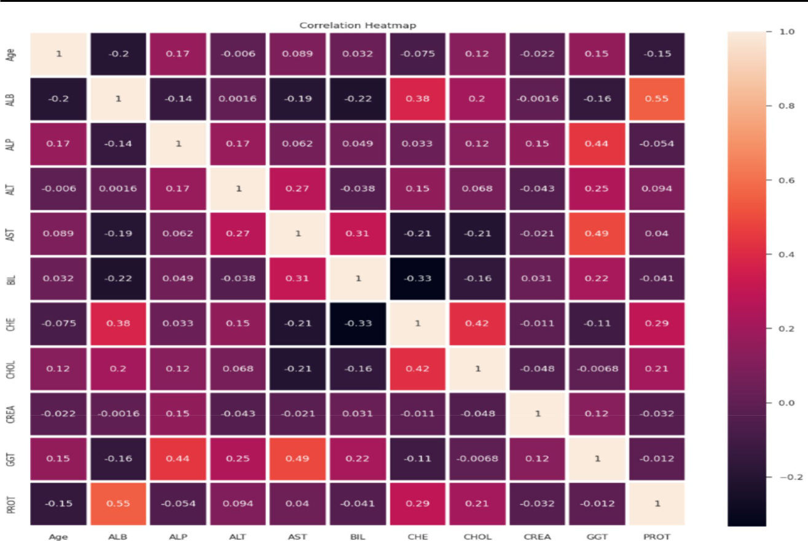
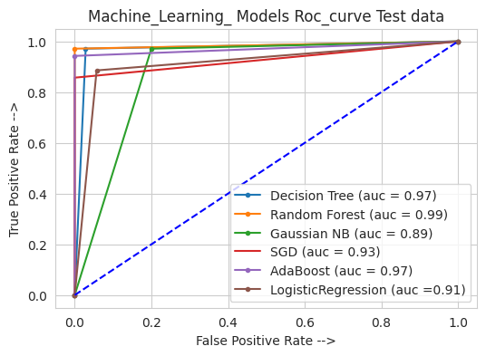
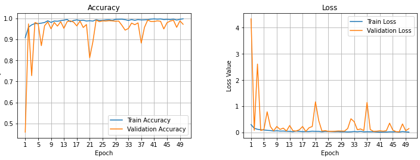

|
Mir Jafikul Alam
I am a Software Engineer at Tappware Solution Ltd. in
Dhaka, where I focus on AI, Agentic AI, and NLP-based
projects, along with deep learning and computer vision. I
hold a Bachelor's degree in Computer Science and am
currently seeking a Master's opportunity to deepen my
expertise in these fields.
Email
/
Github
/
Google Scholar
/
LinkedIn
|
|
Research / Publications
I’m deeply interested in computer vision, deep learning,
generative AI, and image processing. Much of my research
focuses on applying machine learning & deep learning
techniques to critical healthcare challenges.Some papers
are highlighted.
|
|

|
A Novel Approach Utilizing Machine Learning for the
Early Diagnosis of Alzheimer's Disease
Khandaker Mohammad Mohi Uddin,
Mir Jafikul Alam, Jannat-E-Anawar,
Md Ashraf Uddin,
Sunil Aryal
Biomedical Materials & Devices, 2023
A novel machine learning approach to detecting Alzheimer's
disease.
|
|

|
Hepatitis C Prediction Using Machine Learning and Deep
Learning-Based Hybrid Approach with Biomarker and
Clinical Data
Rokiya Ripa,
Khandaker Mohammad Mohi Uddin, Mir Jafikul Alam,
Md. Mahbubur Rahman
Biomedical Materials & Devices, 2024
A hybrid method for hepatitis c prediction based on
biomarker and clinical data
|
|

|
Machine Learning Techniques for Predicting Ovarian
Cancer in its Early Stages Using Biomarkers
Mir Jafikul Alam, Jannat-E-Anawar,
Khandaker Mohammad Mohi Uddin,
Md Hasibur Rahman
Md. Mahbubur Rahman
ICEEICT, 2024
A hybrid machine learning approach for early-stage ovarian
cancer prediction using clinical trial data.
|
|

|
[Thesis]
An automatic System to Detect Pneumonia Using Fused CNN
Model
Mir Jafikul Alam, Mahadi Hasan,
Md Hasibur Rahman
Rokiya Ripa,
Nilufar Yeasmin
supervised By
[Md. Nur-A-Alam]
Pneumonia detection using fused pre-trained CNN models on
chest X-ray.
|
|
{kind=link}